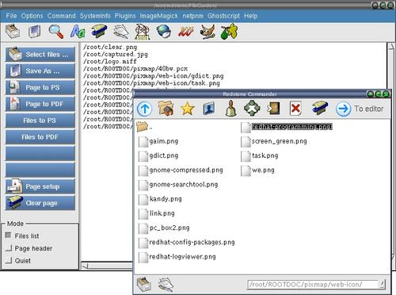

Convert multiple files to postscript

Step 1 : Click "Clear page" to clear the editor if needed.
Step 2 : Click "Select files ..." button to open a open-file dialog.
Step 3 : Double click on a file or multi-select multiple files
to display a file listing on the editor page.
Step 4 : Click "Files to postscript" button to save the file listing
files with the '.ps' extension.
.
File mode : Make sure "File list" mode is checked.